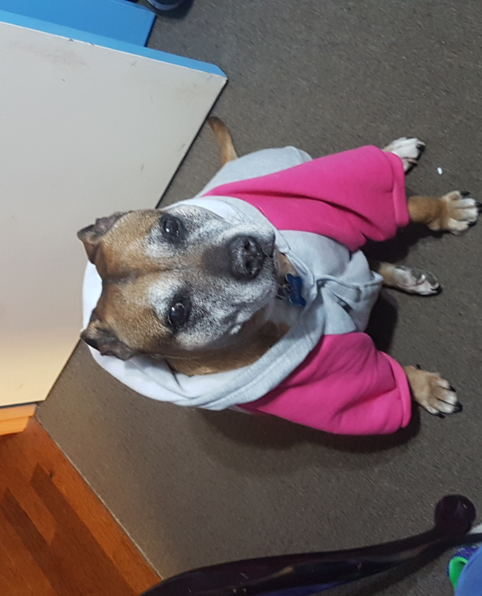

Name: Crystal Yvonne Wolfe
Student Number: s3820684
Email: Wolfprincess97@westnet.com.au or s3820684@student.rmit.edu.au
Nationality: Australian
Cultural Background: Half Filipino/Australian
Hobbies: Karate and Writing
Pet: I have an English Staffordshire Bull Terrier named Missy
Currently - Bachelor of IT at RMIT
2016 to 2018 - Bachelor of Criminal Justice at Victoria University
2016 to 2017 - Diploma of Legal Services at Careers Australia
2010 to 2015 - St Peter's Collage Cranbourne West
My interest in IT has evolved since I was young. I first began my interest in IT because of the challenges that came with figuring out how to fix a computer that is malfunctioning and the determination to figure it out. Now included in interest is my determination to understand how cybersecurity works to protect a user from online criminal activity. When looking into my experiences in IT, I have barely any experience except for what I learnt in the first few weeks of University but with my fascination and determination I am willing to learn about all the challenges and experiences that come with going into the IT world.
The reason I choose to come to RMIT is because the Bachelor of IT is one of the best programs RMIT has to offer. It is also because RMIT is seen as one of top University that can help you find the skills you need to use that would enable the student to become job ready. If done correctly you would be able to have a job after graduating from RMIT. The services are also superb at RMIT as you are always reminded of all the services we can have throughout the semester from students and professors which shows that if you ever need them, they are easy to access.
In this Bachelor of IT course, I expect to learn a lot about how a computer operates and works. This includes:
I really want to learn about security because I have always had a fascination in security and crimes for as long as I could remember and would like to know how a user is protected and if any of the cybercrimes are similar to crimes done to a person.
My ideal job would be working for a company or organisation such as ASIO that helps protect our citizens from cybercrimes. ASIO stand for Australia Security Intelligence Organisation. I would like to work for ASIO under their Technologist Graduate Program that can be found on their website and also here.
If the above links do not work here are two screenshots of the both sites that you can look at.
A description of ASIO graduate program is that the successful candidate would be working for 12 months in a hand on, dynamic, challenging and fast-paced environment of technical work within one of the frontline intelligence agencies in Australia. The successful candidate would then be able to work in areas that can include:
The above are only some of the areas that the graduate could work in. This job is appealing to me as I would like to work with the government in protecting our citizens from cybercrimes through cyber security as I have fascination in this area as well as somestudy some of these types of crimes through my Bachelor of Criminal Juustice.
Some of the skills that might be included is how to program as you would need to have the ability to check if any federal organisation has been compromised and to do that you would need to have some sort of experience in software programming that will enable you to see if there are any loop holes. Another skill would be the ability to learn about how computer security works so that we could see how individuals could hack into a system. The qualifications that you would need to be a successful candidate is that you would need to at least have a discipline in one or more of these degrees, but they are not limited to these degrees.
The skills that I have that will work well if I get this job is communication and determination to get the work done and the experience I have is that I know how to use a computer and fix them when need be from when it crashes to when it freezes. I do have skills and experience in the work force that taught me how to work hard and have the best time management as well as saving regularly as if you don't you could lose your work but I mostly worked on databases and organising where data would go.
Most of my skills and experiences would be coming from when I complete the bachelor of IT as this is where I will be learning all my technological skills. Other areas would be having placement in an IT business or organisation that would need to teach me the experiences I would need that will help me in having a chance to work with ASIO.
After completing an online MBTI Test, I got the results of being an INFP which stands for introverted, intuitive, feeling and perceiving.

After completing an online learning style test, I got the results of being more of a visual learner than that of an auditory learner or tactile learner.
After completing a Big 5 Personality test, I found out the percentages I was of openness, conscientiousness, extraversion, agreeableness and neuroticism.
The results above have shown that the way I see the world is different from others as I am not an outgoing person that likes to go out as I love to stay home but I am a person that people come to when they have problems that they need help to solve. I have always done better when I am shown what to do then having to get it through words so it was obvious that I would be a visual learner. The percentages that were shown in the Big 5 Personality test were a lot like I was expecting because of who I am and the way I interact with people.
The results above may influence my behaviour in a team because of the way I am and that I barely have any social interactions with others except friends and family. But because of the way I do things I see that I work better with people I do not know then I do with people I do know. When learning what to do I would have dilemmas if what we are working on has no visual areas, but I do try my best even without them because I do love challenges and figuring them out
When looking at these results and taking into them into consideration when forming a team I should find a team that has at least someone I have met as it would be easier for me to get to know the others if someone I know is in the team but otherwise I would try my best to put myself in a team that are similar to me in some way and that I know I would work well with.
My project idea would be creating a secure and open-sourced Face and Eye Recognition (FAER) Password Saver and Creator. It will be done as an application that can be found on your computer. It will be downloadable for all types of operating systems. Seeing as it will be an application that not only saves your passwords but help you create them you would need to have a database of all passwords used past and present. These passwords will then be encrypted with face or eye recognition so that it will be only your eyes that will see all your passwords.
This project would be interesting as you would be saving passwords that you will be using daily into an application that you could look into if you had done a face and eye recognition. Even though there might already be a lot of applications and addons that helps save your password this application also helps the user create passwords through asking questions about the user day to day activities that will then create a password for the user to use. This would be useful as if you stuck on making a password as the application algorithms can help through those questions to make a password.
The description of this project is that it would enable a user to have an encrypted and secure place to have their passwords and if the computer the application is on is ever hacked into they would not be able to get to your passwords because of the eye and face recognition. The password would be stored in this application and could be searched if the password is forgotten or if you would need to create a new password. Creating a new password for you to use would be easy as the application algorithm is to ask the user different questions of common day activities or outings, these are at random when you ask the application to create a new password. One of the downfalls of the application is that to create the password, the applications algorithms might give you the same password over and over, to which might be difficult if you need to use a password for an organisation such as school or work that does not let you use the same password for at least 3 to 6 months after that password was last use. The obstacles of this project would be the questions that the application will ask the user seeing as the application would not know what questions to ask the user as the algorithms do not know what the user does on the daily basis unless the user informs the application. So, questions will begin with very basic and broad topics and as time goes on the questions will get more detailed but that still does not help when all the basic and detailed questions that deal with a person day to day activities has been asked.
The password would be saved on a database of passwords that will then show you your current and old passwords. There would also be an area for where each of these passwords are used for and that could be an account to social media, work, school, games or other accounts for websites. When creating a password for the user to use the application to create it and the application would have to make a strong password for the user but there can be a downfall as sometime the algorithm that is programmed might give you a weak or medium password because of the information the user has entered in. This application might also be helpful by saving the website that the password was used on and to enable the browser that they are on to use the application to see the password but to do that you would also need to have your face and eye recognition to make sure that it is you trying to use the password, this is all done through the application that then transfer the password you want to the website and then enters into what account they wanted.
The tools and technology that would be used in making this project would be having a database for you to place all the passwords in and what can be used is an Relational Database Management that is integrated into the application and is edited every time you add a password. Another would be using a programming language to create an algorithm for the application to work with that could either be Java, C, C++ or even C# but the one that would be used to create this application is that of C# as that is the language that applications are usually made of.
The skills and experience that would be required is that we would need to understand the different programming languages that is used for coding and choose the one that would work best in making an application that can save and create passwords. Another skill would be understanding how databases are made and then seeing what kind would be best and to use for passwords which I think would be that of an open-sourced database such as MySQL but for this project it would need to be more like SQLite as we want the application to use as little space on the computer.
The outcome for this project is that we would have an application that will be able to save and create password for the user by asking questions of their daily lives but that does have it downfalls as shown above through how the questioned are asked by the application. One of the problems would be solved by making an algorithm in the program that would tell the application that these passwords have been used already and cannot be created again. Another solution for another problem would make an algorithm that would make the computer understand that the password that it needs to generate must be of a certain length and characters. The impact that it will have in development is that it will enable the user to feel secure that their password is encrypted and can only be entered through face and eye recognition.